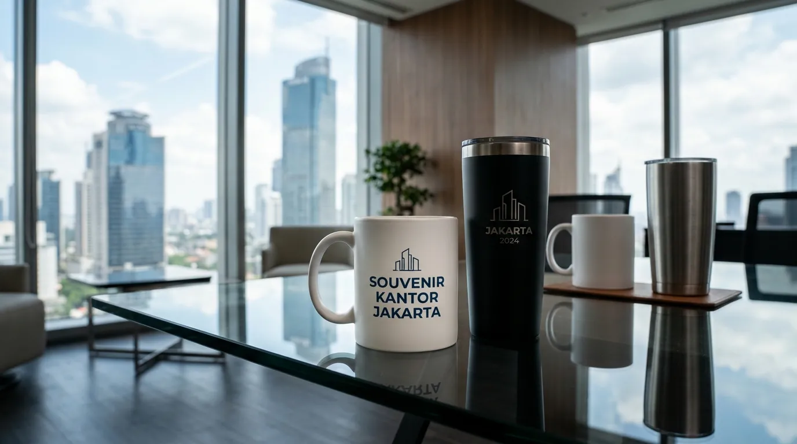

Souvenir Kantor Murah 20 Ribuan Pesanan Jumlah Banyak
 Tim Redaksi Souvenir Kantor Jakarta
11 Agustus 2026
6 Menit Baca
Tim Redaksi Souvenir Kantor Jakarta
11 Agustus 2026
6 Menit Baca

Anggaran 20 ribuan per unit memungkinkan perusahaan mendapatkan produk kustom berkualitas seperti tumbler stainless, mug keramik, pouch, hingga notebook mini. Pemesanan dalam jumlah banyak (bulk order) menurunkan biaya produksi per unit sehingga margin efisiensi anggaran meningkat hingga 35%. Pemilihan material yang tahan lama dan pengerjaan logo kustom yang rapi menjaga citra profesional perusahaan di mata penerima. Pengadaan souvenir kantor terpusat di Jakarta mempermudah distribusi cepat dan memberikan jaminan standar kualitas industri.
Souvenir kantor murah 20 ribu adalah solusi merchandise korporat terjangkau yang dirancang khusus untuk memenuhi kebutuhan seminar, gathering, promosi, dan acara besar perusahaan dengan efisiensi anggaran maksimal.
- Apa Saja Pilihan Souvenir Kantor Murah 20 Ribuan Terbaik untuk Acara Perusahaan?
- Mengapa Memilih Souvenir Kantor Murah 20 Ribu dalam Jumlah Banyak Sangat Menguntungkan?
- Bagaimana Strategi Memilih Souvenir Kantor 20 Ribuan Agar Tetap Terlihat Elegan dan Premium?
- Kesalahan Apa Saja yang Wajib Dihindari Saat Membeli Souvenir Kantor Murah 20 Ribu?
- Pertanyaan Umum Seputar Souvenir Kantor Murah 20 Ribu (FAQ)
- Kesimpulan Praktis
Apa Saja Pilihan Souvenir Kantor Murah 20 Ribuan Terbaik untuk Acara Perusahaan?
Pilihan souvenir kantor murah 20 ribu terbaik meliputi tumbler plastik BPA-free, mug keramik custom, notebook softcover A5, pouch kain spunbond/canvas, dan pulpen eksklusif set.
Memilih merchandise korporat dengan batas anggaran IDR 20.000 per unit sering kali menjadi tantangan tersendiri bagi bagian pengadaan barang. Berdasarkan Data Asosiasi Industri Merchandise Indonesia (AIMI) periode 2025/2026, permintaan barang promosi di kategori harga murah berskala besar mengalami peningkatan sebesar 28% secara tahunan. Peningkatan ini didorong oleh efisiensi anggaran operasional perusahaan tanpa mengorbankan kehadiran brand (brand awareness).
- 1 Tumbler Promosi Plastik BPA-Free
- 2 Mug Keramik Sablon Custom
- 3 Pouch Canvas / Spunbond Multi-fungsi
- 4 Notebook Softcover A5 & Pulpen Gel
- 5 Payung Lipat Promosi Ekonomis
Tumbler promosi plastik BPA-free sangat fungsional untuk penggunaan harian di kantor, dapat dicetak dengan sablon logo perusahaan secara presisi. Mug keramik sablon custom sangat disukai untuk acara internal gathering maupun souvenir meja kerja karena memiliki daya pakai yang lama. Pouch canvas / spunbond multi-fungsi menjadi pilihan tepat untuk mengemas seminar kit, dapat di-print warna penuh (full color) untuk menampilkan logo acara.

Mengapa Memilih Souvenir Kantor Murah 20 Ribu dalam Jumlah Banyak Sangat Menguntungkan?
Pemesanan souvenir kantor murah 20 ribu dalam jumlah banyak menguntungkan karena menekan biaya cetak per unit, menjamin konsistensi kualitas warna logo, serta mengefisiensikan ongkos kirim.
Dalam skala pengadaan korporat, prinsip economy of scale memegang peranan krusial. Menurut Laporan Tahunan Pengadaan Barang Corporate Indonesia 2025, pemesanan souvenir di atas 500 unit mampu memotong biaya operasional cetak hingga 30% dibandingkan pemesanan eceran. Faktor ini memungkinkan perusahaan mendapatkan produk berkualitas tinggi yang tampak mahal, meskipun anggaran yang dialokasikan hanya 20 ribuan per unit.
| Jumlah Pesanan | Harga Satuan (estimasi) | Efisiensi Biaya |
|---|---|---|
| 50-100 unit | Rp 28.000 - Rp 35.000 | Standar |
| 100-500 unit | Rp 22.000 - Rp 28.000 | Hingga 20% |
| 500-1.000 unit | Rp 18.000 - Rp 22.000 | Hingga 35% |
Bagi Anda yang berencana mengadakan seminar skala nasional atau employee gathering, memesan paket murah melalui vendor profesional memastikan bahwa setiap barang melewati proses kontrol kualitas (quality control) yang ketat. Layanan dari Souvenir Kantor Jakarta memberikan kemudahan dalam kustomisasi logo serta kepastian ketepatan waktu pengiriman.
Bagaimana Strategi Memilih Souvenir Kantor 20 Ribuan Agar Tetap Terlihat Elegan dan Premium?
Strategi memilih souvenir kantor 20 ribuan agar terlihat elegan adalah berfokus pada desain minimalis, kerapian kemasan (packaging), dan pemilihan warna netral yang selaras dengan identitas korporat.
Meskipun bernilai 20 ribuan, tampilan souvenir tidak harus berkesan murah. Kunci utamanya terletak pada eksekusi desain dan pemilihan kemasan.
Branding Minimalis
Logo emboss/sablon proporsionalKemasan Elegan
Box kraft + pita/sleevePrioritas Fungsi
Barang dipakai sehari-hariGunakan branding minimalis dengan logo yang di-emboss atau di-sablon dengan ukuran proporsional di tengah produk akan memberikan kesan eksklusif. Pilih kemasan box karton / minimalis kraft untuk mengemas barang dalam kotak bahan kraft cokelat dengan pita atau sleeve kustom membuat harga barang terlihat jauh melebihi nilai aslinya. Prioritaskan fungsi utama dengan memilih barang yang langsung dapat dipakai sehari-hari oleh staf atau klien, seperti tempat minum atau alat tulis berkualitas.
Untuk memperluas wawasan Anda mengenai jenis bahan dan cetakan terbaik, Anda dapat membaca ulasan mendalam kami mengenai pilihan barang seminar kit murah 20 ribuan yang dirancang khusus untuk kenyamanan peserta acara.
Kesalahan Apa Saja yang Wajib Dihindari Saat Membeli Souvenir Kantor Murah 20 Ribu?
Kesalahan yang wajib dihindari saat membeli souvenir murah meliputi mengabaikan spesifikasi material, memesan secara mendadak, serta memilih metode cetak logo yang mudah terkelupas.
Tanpa Sample
Warna cetakan logo tidak sesuai brand guideline
Mengabaikan Waktu
Pemesanan mendadak menurunkan kualitas sablon/grafir
Tanpa Garansi
Pemasok tidak memberikan jaminan penggantian produk cacat
Banyak pembeli tergiur dengan harga murah tanpa memperhatikan durabilitas barang. Tergesa-gesa tanpa sample tidak meminta sample produk terlebih dahulu sering kali menghasilkan warna cetakan logo yang tidak sesuai dengan standar panduan brand (brand guideline). Mengabaikan waktu produksi dengan memesan jumlah ratusan unit dalam waktu dua hari sebelum acara berisiko tinggi menurunkan kualitas pengerjaan sablon atau grafir. Membeli produk tanpa garansi kualitas dengan memilih pemasok yang tidak memberikan jaminan penggantian untuk produk yang cacat produksi.
Untuk memastikan pesanan Anda berjalan lancar tanpa kendala teknis, konsultasikan kebutuhan merchandise Anda langsung kepada Souvenir Kantor Jakarta agar mendapatkan garansi pengerjaan rapi dan tepat waktu.
Pertanyaan Umum Seputar Souvenir Kantor Murah 20 Ribu (FAQ)
Butuh Souvenir Kantor Murah 20 Ribuan untuk Pesanan Banyak?
Konsultasikan kebutuhan souvenir kantor murah 20 ribuan untuk acara perusahaan Anda dengan tim kami untuk mendapatkan rekomendasi produk dan penawaran terbaik.
Konsultasi SekarangKesimpulan Praktis
Pengadaan souvenir kantor murah 20 ribu dalam jumlah banyak merupakan solusi efisien bagi perusahaan yang ingin mempertahankan citra profesional tanpa membengkakkan anggaran operasional. Dengan memilih barang yang fungsional, kemasan yang rapi, serta vendor yang terpercaya, setiap rupiah yang dikeluarkan akan memberikan dampak promosi yang maksimal. Jangan ragu untuk mempercayakan pengadaan merchandise perusahaan Anda kepada Souvenir Kantor Jakarta untuk hasil kustomisasi sempurna dan pelayanan terbaik.